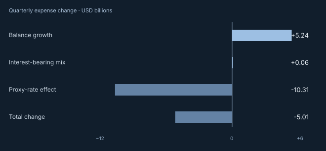

Banking / Cost analysis
Why did bank deposit
costs fall?
Across 4,018 screened banks, quarterly deposit interest expense fell by $5.01 billion. The analysis separates changes in balances, interest-bearing mix and a derived rate measure.
A finance team can use the breakdown to frame a pricing review before making assumptions about customer behavior.
Read the case studyAccounting bridgeQ2 2025 to Q2 2026

- Balance growth
- +$5.242B
- Interest-bearing mix
- +$0.057B
- Proxy-rate effect
- −$10.310B
- Total change
- −$5.012B